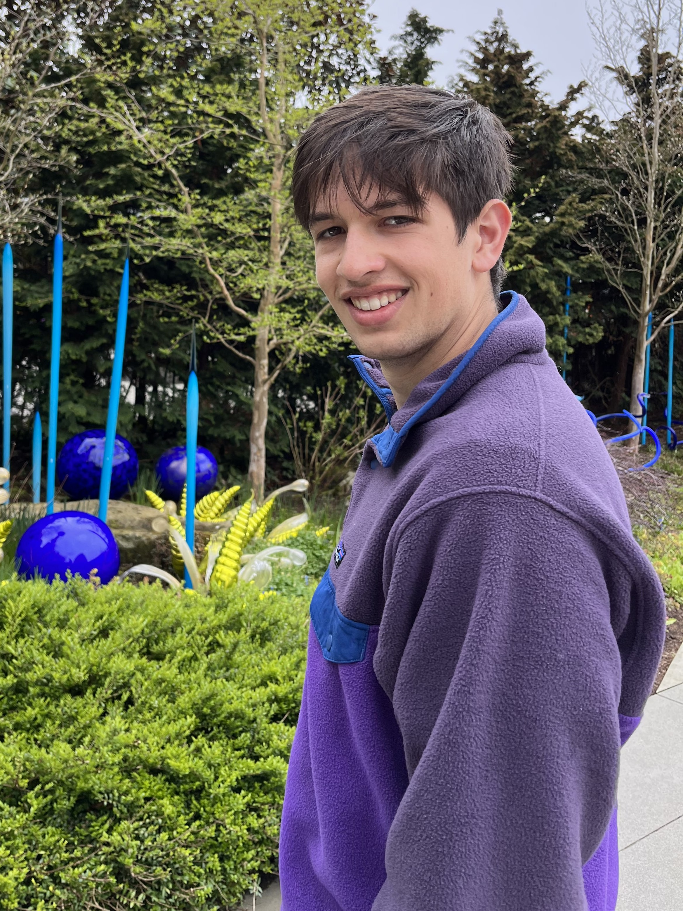
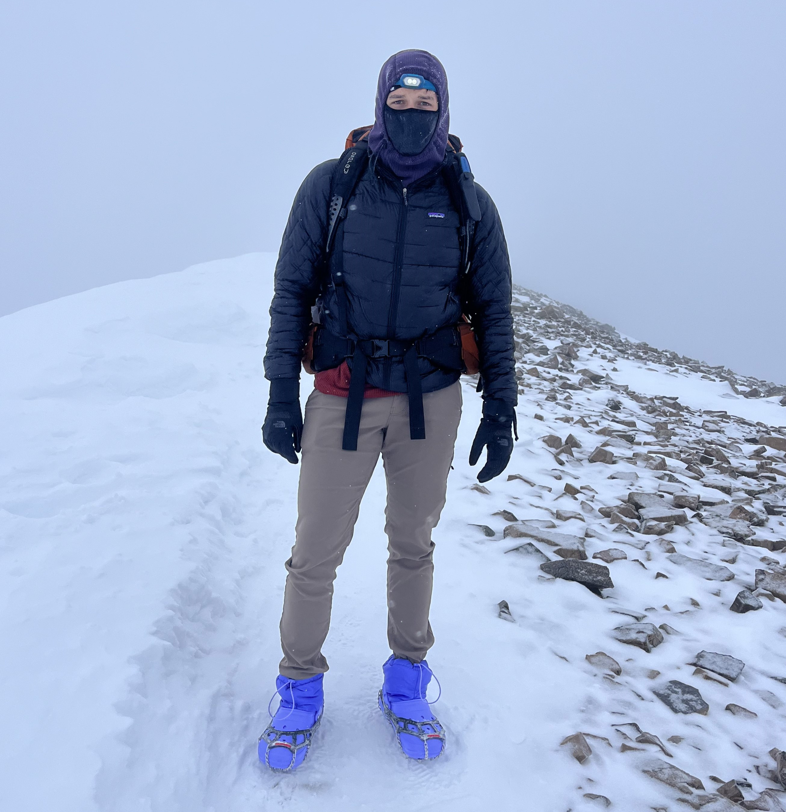

Hello!
 I am a multifaceted engineer who is passionate about electronic systems design, robotics, mechanical design, and everything in-between. I currently work as a Nuclear Instrumentation & Controls Engineer at Sargent & Lundy in Chicago, where I aid the design and integration of digital modifications and upgrades to nuclear power plants. I completed my undergraduate degree in Colorado, where I was first exposed to electronics design through my capstone project. I then moved to Chicago for my Master's degree, where I took part in a second capstone project and successfully defended my thesis in robotics.
Education
Bachelor Science in Mechanical Engineering
Northwestern University
Graduated June of 2024; Concentration in Robotics; GPA: 3.8
Skills & Expertise
- Hardware Design: Altium Designer, Eagle PCB, Schematic Capture, PCB Layout, Component Selection
- Programming: Python, C++, C#, C, Java, MATLAB, Simulink LabVIEW, HTML, Git
- Networking & Communication: SPI, I2C, UART, USB, CAN, MQTT, RF/Wi-Fi Interfaces
- CAD & Fabrication: Solidworks, NX, OnShape, CNC, Lathe, Milling, 3D Printing
- Methodologies: Agile, DFM, DFT, Design for Signal Integrity
Other Interests
 Growing up in Colorado, I have developed an affinity for all kinds of activities from mountain biking to skiing and hiking. My ideal way to spend a day is a long bike ride through the mountains - a hobby I developed when training and racing with the CU Boulder Cycling team. I also like to climb 14er's (mountains above 14,000 feet in elevation), and lately I have been climbing them in Crocs (which I highly recommend, you doubters). I have summited 29 of the 58 Colorado 14er's, 8 of them in the winter, 7 of them in Crocs, and 1 in Crocs during the winter. In 2020, I began to play classical piano, and have been working to learn Nocturnes and Waltzes from Romantic Era composers such as Chopin and Brahms. Beyond that, I love to cook, play chess, and am fluent in French.
Contact
I'm always open to discussing new opportunities! Feel free to reach out to me at:
Email:
Or connect with me on: